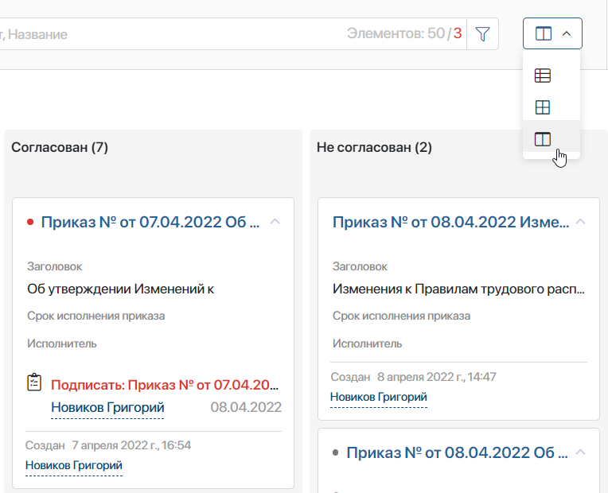
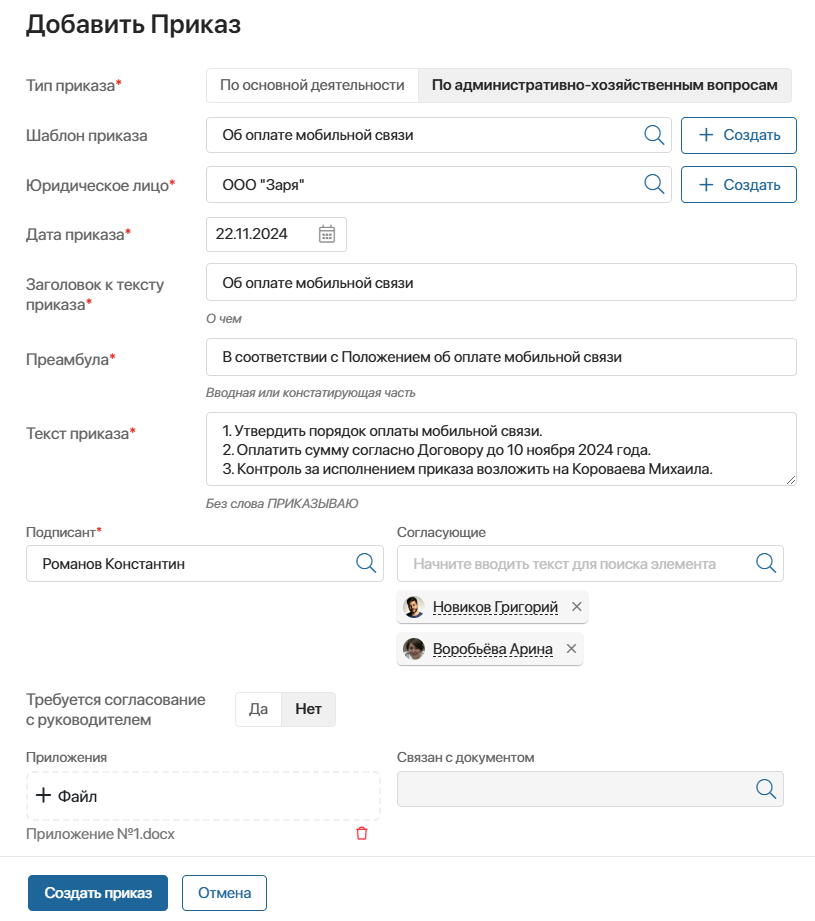
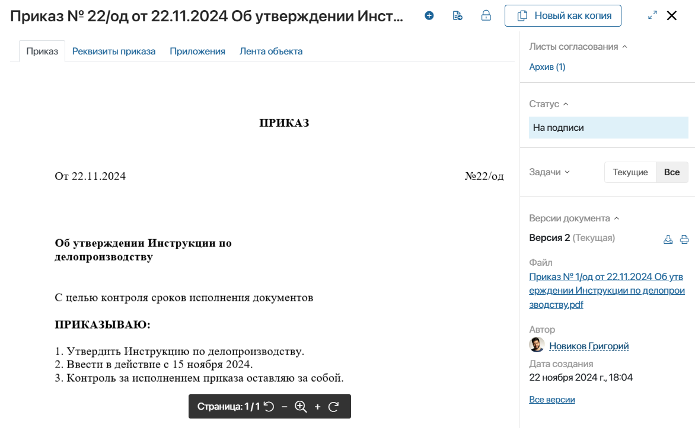
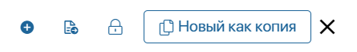
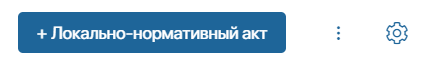
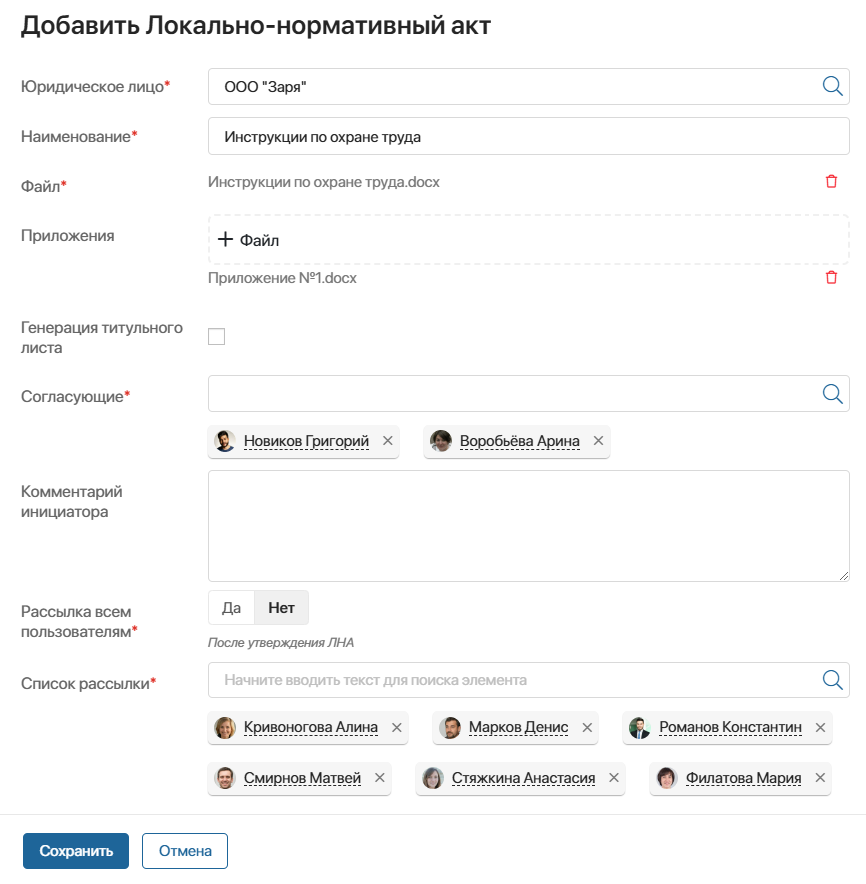
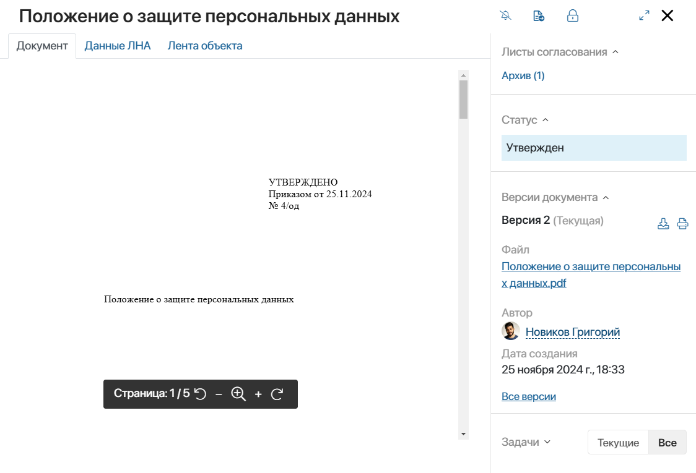
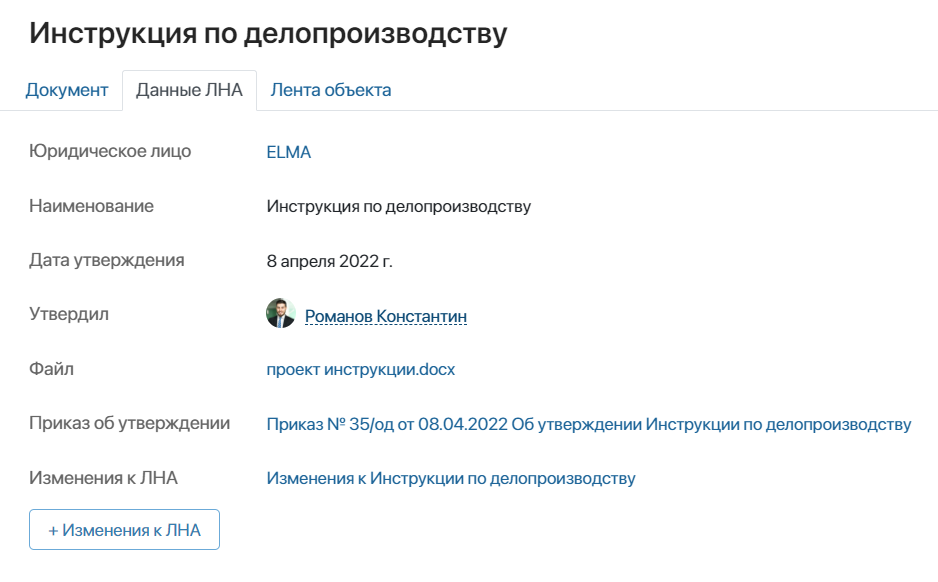

Приложения в данном разделе по умолчанию отображаются в виде таблицы. Однако вы можете поменять вид отображения документов на канбан‑доску, чтобы отслеживать статусы каждого документа и его продвижение по процессу.
Для этого в приложении нажмите кнопку в правом верхнем углу и выберите удобный вид отображения:

Добавить приказ
С помощью приложения Приказы можно организовать полный цикл формирования, согласования и подписания приказов в компании. Специальный бизнес-процесс позволяет автоматически генерировать приказы по шаблону.
По умолчанию у всех пользователей есть права доступа на создание приказов.
Чтобы создать новый приказ в системе:
- Перейдите в приложение Приказы.
- Нажмите кнопку + Приказ в правом верхнем углу.
- Заполните открывшуюся форму:

- выберите тип приказа, шаблон приказа, если шаблоны настроены, и собственную компанию;
- заполните поля Заголовок к тексту приказа, Преамбула, Текст приказа. Если приказ формируется по шаблону, значения запишутся в поля автоматически, но вы можете их изменить;
- укажите, требуется ли согласование с руководителем инициатора, выберите подписанта. Если не указан шаблон приказа, укажите согласующих.
В поле Связан с документом вы можете выбрать документ из любого приложения, с которым связан приказ. Например, выбрать письмо, на основании которого оформляете приказ. При оформлении приказа взамен действующего вы можете указать в данном поле отменяемый приказ. В дальнейшем в карточку просмотра приказа будет вынесена ссылка на этот документ, что упростит работу с данными.
При наличии приложений к приказу добавьте их в соответствующее поле.
Нажмите Создать приказ. Запустится бизнес-процесс оформления приказа. В ходе него сформируется файл, который отобразится в карточке созданного элемента на вкладке Приказ. На других вкладках вы можете посмотреть всю информацию о приказе: реквизиты, приложения и ленту сообщений. На правой панели отобразятся резолюции согласующих, текущий статус обработки, назначенные по приказу задачи, а также список всех версий документа, добавленных в ходе процесса.

Оформление приказа
После формирования карточки приказа осуществляется постановка задач:
- руководителю сотрудника, создавшего приказ, — согласовать приказ, если требуется;
- согласующим при необходимости — согласовать приказ. Список согласующих определяется шаблоном приказа из соответствующего справочника или выбирается вручную на этапе создания карточки.
Затем, в зависимости от выбранной настройки использования электронной подписи в разделе ОРД, процесс направляется по одному из двух вариантов:
- Оформление электронного приказа — участникам назначаются следующие задачи:
- подписанту — подписать приказ с использованием электронной подписи.
- делопроизводителю — зарегистрировать приказ.
После этого генерируется файл приказа.
- Оформление бумажного варианта приказа — участникам назначаются следующие задачи:
- делопроизводителю — зарегистрировать приказ;
- секретарю — подписать сгенерированную бумажную версию приказа с номером, разместить сканированную копию в системе.
Далее в обоих случаях далее запускается подпроцесс Исполнение приказа с задачами:
- секретарю — заполнить список на ознакомление с приказом, определить исполнителей, указать необходимость составления протокола исполнения приказа;
- пользователям, выбранным секретарём для ознакомления с приказом — ознакомиться с приказом;
- исполнителям — отчитаться об исполнении приказа.
По ходу процесса приказ в соответствии с предстоящим этапом примет один из настроенных в системе статусов, а его инициатор получит сообщение о результате согласования.
При необходимости процесс можно легко изменить: добавить новые шаги или участников.
Также в решении есть возможность создать приказ на основе существующего. Для этого откройте нужный приказ и в правом верхнем углу нажмите кнопку Новый как копия.

После этого откроется карточка создания приказа, где все поля будут автоматически заполнены данными из исходного приказа.
Добавить локально-нормативный акт
С помощью приложения Локально-нормативные акты можно организовать согласование и утверждение ЛНА в компании.
По умолчанию у всех пользователей есть права доступа на создание ЛНА.
Чтобы создать новый локально-нормативный акт в системе:
- Перейдите в приложение Локально-нормативные акты.
- Нажмите кнопку + Локально-нормативный акт в правом верхнем углу.

- Заполните открывшуюся форму:

- выберите собственную компанию, внесите полное наименование документа в именительном падеже, добавьте проект локально-нормативного акта в поле Файл, при необходимости загрузите приложения к ЛНА;
- укажите, требуется ли автоматическая генерация титульного листа ЛНА, выберите согласующих;
- укажите, кому необходимо направить уведомление об утверждении нового ЛНА — всем пользователям или определённому списку сотрудников компании.
При необходимости можно добавить дополнительную информацию для согласующих в поле Комментарий инициатора.
Нажмите Сохранить. Запустится бизнес-процесс оформления ЛНА. Этапы обработки добавленного ЛНА можно отслеживать в приложении Локально-нормативные акты. В карточке элемента на разных вкладках вы увидите файл ЛНА, сведения о его утверждении, а также связанные с ним сообщения и оповещения. На боковой панели отобразятся резолюции согласующих, статус оформления, добавленные в ходе обработки версии документа и поставленные по ЛНА задачи.

Оформление ЛНА
После формирования карточки ЛНА осуществляется постановка задач:
- согласующим — согласовать проект ЛНА;
- инициатору — после завершения согласования с положительным результатом создать приказ об утверждении ЛНА. В карточку уже занесена часть данных, поэтому требуется заполнить недостающие данные и нажать кнопку Создать приказ.
Запустится процесс Оформление приказа.
После подписания и регистрации приказа запускается подпроцесс Исполнение приказа, а секретарю параллельно поступает задача на добавление утверждённой версии документа. В зависимости от выбранной опции генерации титульного листа, задача будет содержать разные данные — либо регистрационные данные приказа, которые необходимо внести в титульный лист, либо сформированный по шаблону титульный лист, который необходимо добавить к тексту документа. После исполнения задачи файл с титульным листом размещается в карточке ЛНА на вкладке Документ.
На других вкладках вы можете посмотреть реквизиты и другие данные, а также запустить процесс согласования изменений к локально-нормативному акту.
Для этого нажмите кнопку + Изменения к ЛНА. Откроется карточка создания, где будет заполнена часть полей. После проверки и внесения недостающих данных, нажмите кнопку Сохранить.

Добавить изменение к ЛНА
Приложение предназначено для создания, согласования и утверждения изменений к действующим локально-нормативным актам. Приложение работает аналогично приложению Локально-нормативные акты.